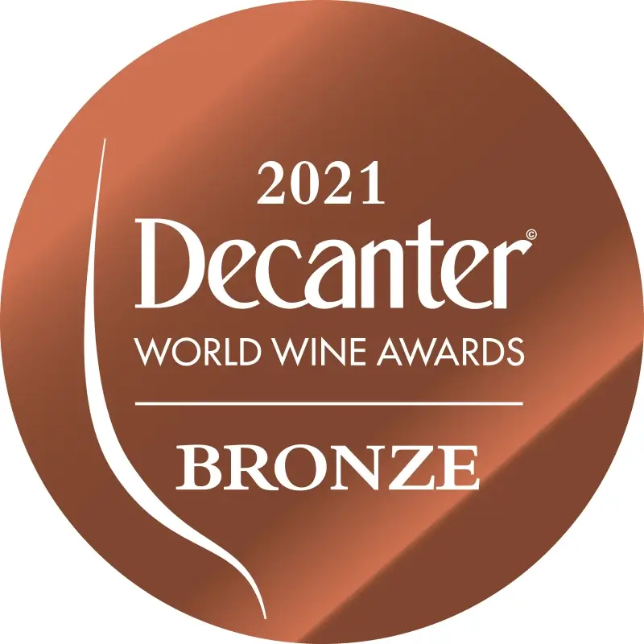
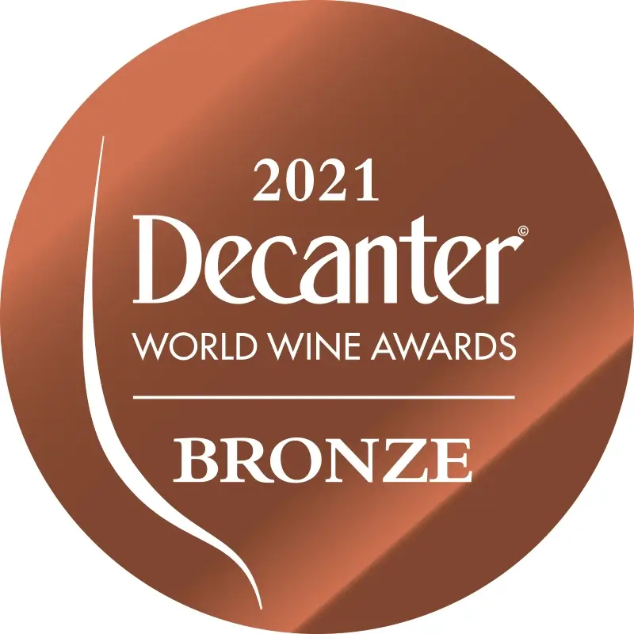

Произведено в Молдове – Признано во всем мире
Произведено в Молдове – Признано во всем мире


Выставок посещяется ежегодно
Медалей за последние года
Золотых медалей за последие года
Серебряных медалей за последние года
Kazayak Vin и Suvorov Vin ежегодно посещают такие выставки, как: International Wine & Spirit Competition, International Wine Challenge, Eurasia Wine & Spirits Competition, Mundus Vini, Decanter World Wine Awards, Concours Mondial de Bruxelles, Challenge International du Vin, Wine Official Selection Fair in Transylvania и др.


Винодел Suvorov-Vin
Опыт работы 46 лет
Лучший винодел Республики Молдова 2019 года


Винодел Kazayak-Vin
Опыт работы 26 лет
Лучший винодел Республики Молдова 2020 года
«Хорошее вино — как хороший фильм: быстро заканчивается, оставляя великолепное послевкусие; с каждым глотком в нем открывается что-то новое, и как это часто бывает с фильмами — оно рождается и возрождается в каждом новом ценителе» Так и наши виноделы, как наиболее искусные и опытные режиссёры, из года в год, трудятся над созданием своего лучшего творения. А мы смакуем кадры и наслаждаемся нотками великого произведения и жаждем, чтобы в следующий раз, наш Творец получил очередной трофей - Золотую медаль!


 
